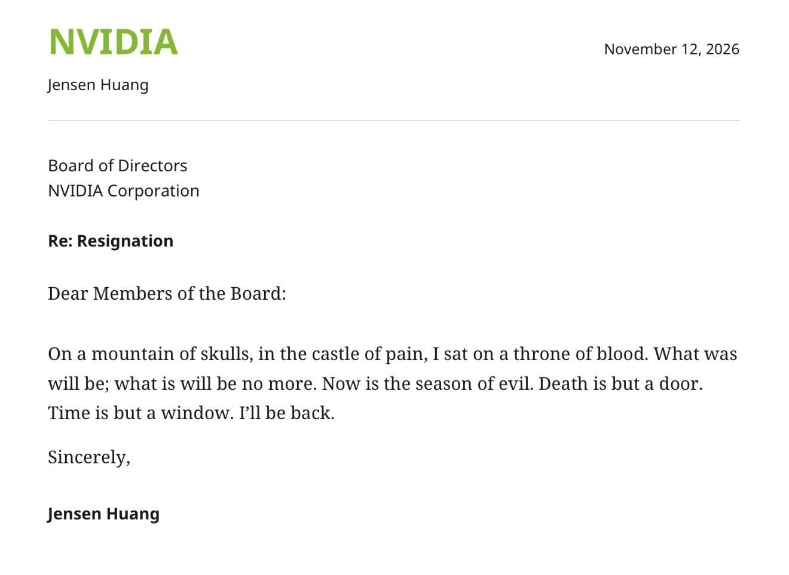
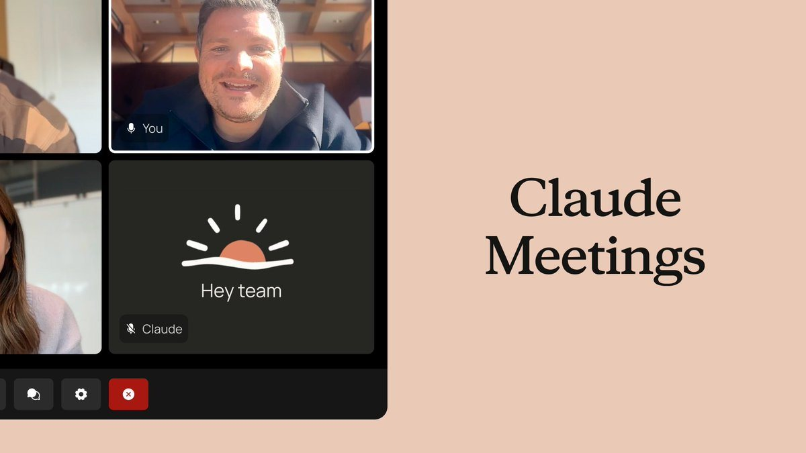

Ouça a edição · 1:33Um papo rápido sobre as notícias de hoje
0:00/1:33
Nvidia · Jensen Huang · @WSJ
Jensen Huang deixa o comando da Nvidia, e a história por trás parece roteiro de filme de espionagem
O Wall Street Journal publicou na quinta que o fundador da Nvidia renunciou ao cargo de CEO. Segundo a reportagem exclusiva do jornal, a saída vem depois de uma investigação interna sobre um caso de Huang com uma mulher chinesa suspeita de ser espiã.
Post de 12 de novembro · @WSJ · passou de 1,5 milhão de impressões e 1.800 quotes
É difícil exagerar o peso da notícia. Huang cofundou a Nvidia em 1993 e comandou a empresa durante toda a virada que transformou a fabricante de placas de vídeo na peça central da infraestrutura de IA, com a jaqueta de couro virando quase um logotipo. O título do link do WSJ fala que a Nvidia se preparava para tirá-lo do cargo, enquanto o post do jornal já anuncia a renúncia, então vale acompanhar os próximos dias para entender quem assume e como fica a relação com os clientes que dependem dos chips da empresa.
A internet, como sempre, reagiu primeiro com humor. Circula uma carta de demissão falsa, endereçada ao conselho, que fala em montanha de caveiras e trono de sangue e termina com um "I'll be back" digno do Exterminador, e um vídeo feito com IA que coloca Huang dentro do Matrix passou de 7,5 milhões de impressões em menos de um dia. Nenhum dos dois é documento oficial; a fonte da notícia continua sendo a reportagem do jornal.
A arte do Wall Street Journal que anunciou a renúncia de Huang na quinta-feira.

A carta de demissão que viralizou é piada: termina com "I'll be back" e assinatura de Jensen Huang.
02
Radar
reunião com IA, modelos que decidem, scan no repo e um apartamento em three.js
Claude Meetings · beta · @claudeai

O Claude agora entra na chamada de vídeo e monta o documento enquanto o time ainda está falando
A Anthropic apresentou o Claude Meetings, que coloca o Claude como participante da reunião para criar docs, whiteboards e outros artifacts em tempo real, a partir da própria conversa. O rollout começa em beta, só para os planos Team e Enterprise.
O anúncio passou de 5 milhões de impressões e 15 mil bookmarks, sinal de que a dor da ata que ninguém escreve é universal. A diferença para um simples transcritor é que o resultado sai como material de trabalho, não como resumo.
O Google também entrou na corrida dos modelos de decisão, a dez centavos por milhão de tokens
Logan Kilpatrick (@OfficialLoganK) anunciou o Gemini Decision 1 na Gemini API, com entrada nativa de imagem, áudio, vídeo e PDF, context window de 256 mil tokens e até mil perguntas por requisição. Na tabela do Google, ele lidera o JevBench com 92,2% e tem a melhor calibração entre os comparados, embora custe um pouco mais que o TypeSafe Jev 1.14 nas sete avaliações em comum.
Depois do THX-02 da edição de ontem, fica claro que decidir entre opções virou categoria própria de modelo. O Google diz que dá para testar de graça na API.
Dois CLIs novos para olhar o próprio repo com outros olhos, um pela segurança e outro pela arquitetura
O Codex Security, da OpenAI, escaneia o repositório inteiro, um diff ou só algumas pastas, valida os achados e gera patches. O detalhe que eu mais gostei é que o scan usa o SECURITY.md como guia do que importa, e o próprio CLI rascunha esse arquivo fora do repo para você revisar o diff antes de copiar.
O Floorplan, de @haydenschmitty, é um plugin para Claude Code e Codex que lê o código e desenha um mapa interativo do app, com nomes em linguagem simples para cada parte e cada conexão. Dá para perguntar ao mapa o que quebra se uma tabela mudar, e ele roda no plano que você já tem, sem API key.
No Mac, o Grok Bot passou a usar Mensagens, Mail, Notas, Lembretes, Calendário, Localização e Contatos
A atualização transforma o assistente num agente que mexe nos apps nativos da Apple, depois de você liberar cada um numa tela de permissões. Na prática, pedidos como marcar um compromisso, achar um contato ou criar um lembrete deixam de exigir integração separada.
O post passou de 1,2 milhão de impressões e juntou mais de mil respostas. Como cada app pede permissão própria, dá para começar só pelo que você topa abrir.
O agentes.chat abriu o beta de um chat de time em que os agentes de IA trabalham no canal, à vista de todos
A proposta é você mencionar um agente, ele fazer o trabalho e pedir aprovação antes de qualquer ação sensível, como merge, deploy ou rollback. Cada agente usa o plano de Claude, ChatGPT ou Gemini que você já paga, ou uma API key, e ganha papel, ferramentas e orçamento próprios.
O código é open source, sob AGPL, e roda de graça no seu servidor com Postgres; na nuvem, os planos vão de 29 a 99 dólares por mês. A interface já vem em português do Brasil.
O XERJ Reader-1 é proibido de gerar texto e responde escrevendo um programa que dá para verificar
Ivan Novikov (@d0znpp) apresentou um modelo neurosymbolic para trabalhar com dados que, em vez de redigir a resposta, aponta as palavras exatas do documento e escreve um programa que chega ao resultado. A ideia é trocar a confiança no texto bonito pela possibilidade de conferir cada passo.
Para quem lida com contrato, planilha ou relatório, é uma resposta direta ao problema da alucinação. O post passou de 560 mil impressões.
Meng To recriou o próprio apartamento em three.js e publicou o passo a passo completo
O designer Meng To (@MengTo) montou a cena com Opus 5.5 e Fable 5.2 para gravar os vídeos dos tutoriais dele. Ela é interativa, dá para andar pelo apartamento no browser, trocar a iluminação e o estilo de render, e todos os objetos são código.
O tutorial tem mais de dez minutos e mostra o processo do começo ao fim. É uma boa referência de até onde dá para ir em 3D só conversando com o modelo.
Quem contrata em tech diz que sobra currículo sênior e falta gente que saiba explicar como usa IA
Bruno Orlandi (@BrOrlandi) compartilhou um post de Matheus Wentzel, que está contratando e conta que a pergunta mais difícil para os candidatos é simples: como você usa IA no seu trabalho? Ele lista três erros recorrentes, entre eles não perceber a velocidade da mudança e perder espaço para gente de negócio que já automatiza mais do que muito dev.
A tese central é que o conhecimento deixou de ser vantagem, porque está à venda por alguns dólares por mês, e o que conta agora é experiência acumulada usando agentes de verdade. Para Orlandi, o post está certíssimo.
Rode um scan de segurança só no que mudou desde a main
Instale com npm install --global @openai/codex-security, faça cs login e rode cs scan . --diff origin/main num repo que você conhece bem. Abra o relatório em Markdown que aparece no caminho REPORT e veja se os achados batem com o que você já desconfiava.
teste 2 · Floorplan
Peça a planta do seu app e faça uma pergunta difícil a ela
Antes de instalar, explore a demo do Floorplan no browser para sentir o mapa. Depois adicione o plugin no Claude Code ou no Codex, peça "Make me a floorplan of this app" e pergunte o que quebra se você mexer na tabela de usuários.
teste 3 · reunião
Transforme a próxima call num documento antes de desligar
Se o seu time estiver no plano Team ou Enterprise do Claude, chame o Claude Meetings numa reunião curta e peça um resumo com decisões e próximos passos. Compare com as anotações que alguém fez à mão e veja o que ficou de fora em cada versão.